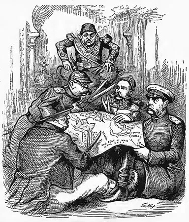
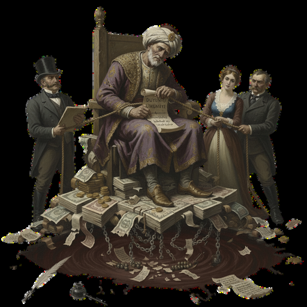
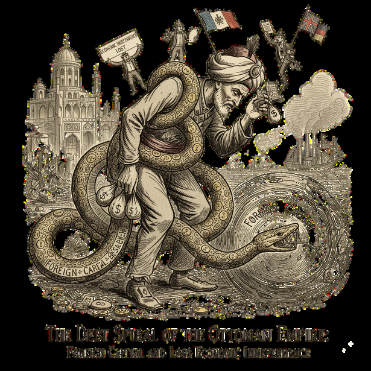

Türkiye's economic history has always fascinated me. I find it particularly valuable to examine and understand why and how decisions were made under difficult circumstances. In this article, I discuss my thoughts on the Ottoman Empire's experience with foreign capital in the 19th century by reviewing two pieces: Korkut Boratav's Türkiye İktisat Tarihi (2015) and Ayça Tekin-Koru's "Yüzyılın Yabancı Sermaye Öyküsü" (2023). Reading and discussing the writings of Boratav and Tekin-Koru has also given me a unique perspective on this process.

Understanding Foreign Capital and Economic Dependence
In my opinion, in order to understand the economic situation of the Ottoman Empire in the 19th century, it is first necessary to understand what foreign capital means. For the Ottoman Empire, borrowing from the international market initially seemed like an easy and practical solution, and it may have been thought that foreign powers were investing in the country with the aim of helping it. However, it gradually led to the Ottoman Empire losing its economic independence. Boratav argues that the Ottoman economy lacked the strength to sustain itself in the 19th century, leading to the dominance of foreign capital through foreign borrowing and direct foreign investment. As Tekin-Koru notes, the economy during this period was largely shaped by foreign capital inflows.
The Ottoman Empire was unable to gather its strength and take control of the system. — On foreign railway investment
This process, which began in 1854 to finance the Crimean War, as Boratav explains, led to dependence on foreign capital rather than strengthening the empire's own economy. This borrowing created a financially dependent structure rather than increasing production and development. This borrowing was not only a financial step but also a step that eroded Ottoman sovereignty and independence.
Railways and the Concentration of Foreign Capital
As a result of the state's financial inadequacies, it did not settle for material borrowing alone; also foreign investments also intensified in areas such as railways, banking, and insurance. As Tekin-Koru highlights, the area where foreign capital was most concentrated was railways. While facilitating economic revival and trade on the one hand, extensive privileges were granted to foreign companies on the other. The Ottoman Empire was unable to gather its strength and take control of the system.


If we could have used the aid we received from abroad to build our own railway network, this process would have been more positive for us. Unfortunately, Europe realized the strategic importance of railways before we did. While goods could be easily transported from Europe to Istanbul, the Ottoman Empire experienced serious disruptions in its own internal delivery and transportation processes. Unfortunately, by aiming for development through the high-road, we have signed up for a superficial modernization, which has left us one step behind other countries.
The Debt Trap and the Düyun-u Umumiye
As the Ottoman Empire borrowed more, it became increasingly dependent; similarly, as debt payments increased, it was forced to borrow again. This debt spiral continued. It tried to cover its debts with more debt. According to Boratav, the Düyun-u Umumiye, established in 1881, was created to ensure that debts were paid off in a planned manner. This institution was not only a debt collection agency but also a guarantee mechanism for foreign investors. It ensured that Europe would guarantee that the Ottoman Empire could borrow from abroad and repay its debts. However, it was not as innocent as it seemed. It placed the Ottoman finances under the control of European creditors. It transferred certain taxes collected in the Ottoman Empire directly to European creditors. It took away the empire's power to control its own money.
Looking to the Future Through Historical Perspective
From an optimistic perspective, investments made in the Ottoman Empire demonstrate the support foreign powers provided for the country's development. It seems that external powers supported us in our development and progress. Unfortunately, from a more realistic perspective, it reveals that the empire's independence was undermined and the Ottoman territories were economically divided. The freedoms granted in exchange for loans and investments enabled Europe to control the economy and undermine the independence of the Ottoman Empire.
I believe that Turkish youth need to learn more about the events that have had such a profound impact on our history. In the history lessons we took for years, I wanted to learn about world history and its impact on Türkiye. When looking at a picture, I wanted to see the whole picture, not just one point. This cannot be achieved by knowing only Turkish history. More detailed world history lessons and Türkiye's decisions during those periods help us make more comprehensive analyses. Learning our history not only through wars and facts but also through cause-and-effect relationships and connections makes it more memorable and allows us to learn about the past better and be more curious about it.
Reading these in-depth studies always helps me understand much better why learning history is so important. It helps us analyze why certain decisions were made during specific periods. It not only helps us understand the past, but also shapes the decisions we make today. My thoughts before and after this research are definitely different. The process of economic dependence shows that if we want to experience real development and progress, we must maximize our own capabilities and prioritize our independence in all areas. We can take examples from outside, but we should not be dependent on the outside. For real progress, we must courageously chart our own course rather than copying the path of others.
Selected references
- Boratav, K. (2019). Türkiye iktisat tarihi, 1908–2015. İmge Kitabevi.
- Tekin-Koru, A. (2023). Yüzyılın yabancı sermaye öyküsü.